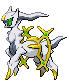

-
Arceus #493
- Normal
Arceus é conhecido como o "Pokémon Original" e é muitas vezes referido na mitologia como o Pokémon que moldou o universo com seus 1.000 braços.
-
Darkrai #491

- Sombrio
Darkrai é conhecido por causar pesadelos, e é ativo durante as noites de lua nova.
-
Groudon #383

- Terra
Em sua forma Primal, Groudon também ganha o tipo Fogo.
-
Kyogre #382

- Água
Kyogre é conhecido na mitologia como o Pokémon que expandiu o mar ao cobrir a terra com chuvas torrenciais e ondas gigantescas.
-
Kyurem #646

- Dragão
- Gelo
Ele é conhecido como o “Pokémon Limite” e é dito que veio de um meteoro que caiu na Terra há muitos anos.
-
Lugia #249

- Psíquico
- Voador
Lugia é conhecido como o "Pokémon Guardião dos Mares" e é dito que aparece durante tempestades.
-
Mewtwo #150

- Psíquico
Mewtwo é um Pokémon criado por manipulação genética usando o DNA de Mew.
-
Moltres #146

- Fogo
- Voador
Moltres é conhecido como o "Pokémon Chama" e é um dos três pássaros lendários de Kanto.
-
Raikou #243

- Elétrico
Raikou é conhecido como o "Pokémon Trovão" e é um dos três cães lendários de Johto.
-
Rayquaza #384

- Dragão
- Voador
Rayquaza é conhecido como o "Pokémon do Céu" e é o mestre do trio do clima, que também inclui Kyogre e Groudon.